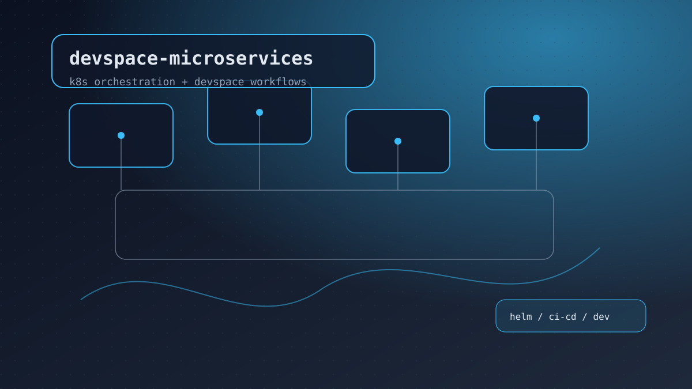
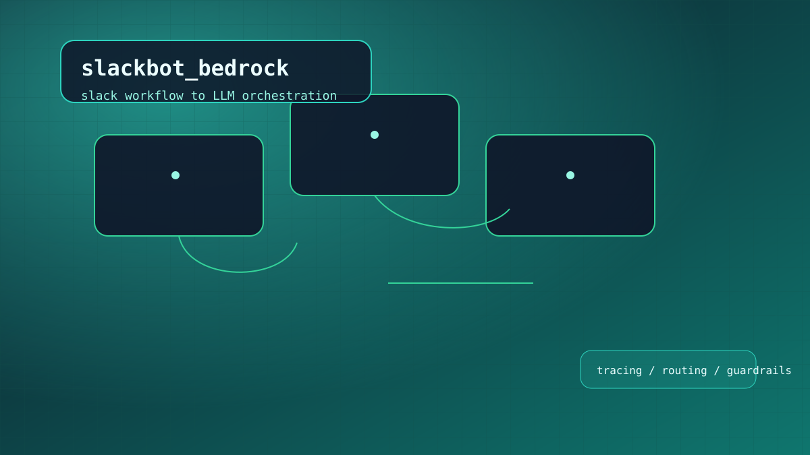
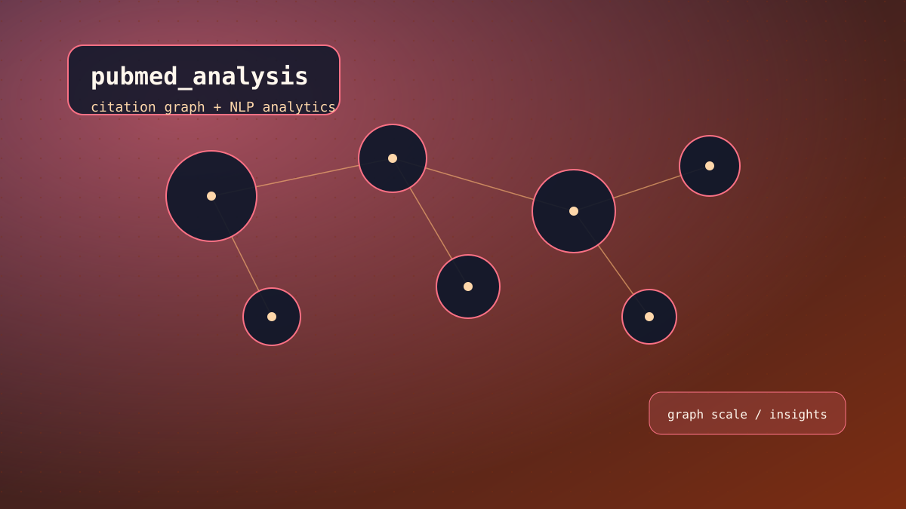

GameHub
Built with AIA collection of 10 browser games built entirely with AI pair programming. Covers game loops, collision detection, AI opponents, and interactive development.
Stack: HTML5 Canvas, Vanilla JavaScript
Software Engineer III
I build reliable backend platforms, AI-ready data systems, and developer tooling that accelerates delivery at scale.
When I'm not building platforms, I'm exploring how AI can amplify human creativity. I believe the best engineering happens when tools serve people, not the other way around.
Systems-focused engineer who turns complex workflows into reliable platforms.
For over eight years, I've been designing event-driven systems, data integration pipelines, and cloud infrastructure across companies like GoFundMe, Genentech, and SymphonyAI. My work centers on platform reliability, automation, and scalable data foundations that power AI/LLM workflows while improving developer velocity.
I'm particularly interested in how AI can amplify human creativity rather than replace it. When I'm not deep in code, I'm experimenting with AI pair programming tools, writing about my learnings, and building projects that explore the intersection of traditional backend engineering and modern AI capabilities.
Stories from the trenches of building at scale.
At GoFundMe, we needed to sync millions of donor records in real-time without breaking the bank. Built event-driven integrations that cut costs by fifteen percent while improving data access speed by thirty-five percent.
A legacy ETL pipeline at SymphonyAI was taking over four hours to process data. Redesigned the workflow to complete in under ten minutes, freeing up resources and enabling faster decision-making.
Moved our team from weekly to daily deployments by streamlining Bitbucket and AWS CodePipeline workflows. Less friction means more shipping.
Built a large-scale migration framework at Genentech moving data from Salesforce to enterprise systems. Improved data integrity by thirty-five percent along the way.
Tuned Elasticsearch analyzers at SymphonyAI to improve query performance by eighty percent and reduce response time by twenty-five percent. Users notice when search gets faster.
Optimized Kotlin GraphQL services at GoFundMe, raising query performance while making life easier for frontend developers.
Boosted Spring Batch throughput by thirty percent at Genentech, cutting runtime from ten to seven hours per run. Small improvements compound.
Improved real-time data accessibility by thirty-five percent with event-driven Salesforce integrations. Event-driven done right means systems talk to each other without breaking.
Building systems that scale and teams that ship.
Live data pulled from GitHub. Filter by language or search.
Highlights pulled from GitHub.
Loading repositories from GitHub...
Projects built with AI pair programming using Claude Code, Qwen, and LangChain.
I've been experimenting with AI pair programming to explore how AI can amplify human creativity. These projects aren't just about what's possible with AI—they're about how AI changes the way we think about building software. I write about my learnings, the patterns that work, and the challenges that still require human judgment.
A collection of 10 browser games built entirely with AI pair programming. Covers game loops, collision detection, AI opponents, and interactive development.
Stack: HTML5 Canvas, Vanilla JavaScript

Comprehensive mortgage cost calculator modeling true homeownership expenses. Includes amortization schedules, financial formulas, and data visualization.
Stack: TypeScript, Chart.js

Document-to-quiz generator that converts PDFs and textbooks into chapter-level quizzes. Features NLP, question generation, and adaptive learning.
Stack: Python, PDF parsing

Comprehensive stock tracking with technical indicators (RSI, MACD, Bollinger Bands), portfolio management, and performance visualization.
Stack: Python, Pandas, Matplotlib
Deep dives into how I approach systems, data, and AI workflows.

Problem: Teams needed consistent local-to-cluster workflows without drift.
Approach: Built DevSpace + Helm templates with repeatable environment rules.
Impact: Faster onboarding and fewer deployment mismatches.
Stack: TypeScript, Kubernetes, Helm, DevSpace.

Problem: Slack workflows needed safe, observable access to LLM responses.
Approach: Added routing, response formatting, and logging around Bedrock calls.
Impact: Reliable AI responses with traceability for iteration.
Stack: TypeScript, AWS Bedrock, Slack API.

Problem: Analyze massive citation graphs for research insights at scale.
Approach: Built preprocessing pipelines and network analysis workflows.
Impact: Enabled exploration of 31M+ citations and 210M+ edges.
Stack: Python, Jupyter, graph analytics.
Things I enjoy working with.
Continuous learning in tech and beyond.
Master of Science, Project Management (Nov 2025 - Present)
Master of Science, Computer Science (Jan 2021 - Dec 2022)
Award: Academic Excellence (CGPA: 4)
Open to backend, platform, and data infrastructure roles.
I'm always excited to connect with folks building interesting things. Whether it's a challenging engineering problem, swapping war stories about production incidents, or discussing AI-assisted development, I'm here for it.